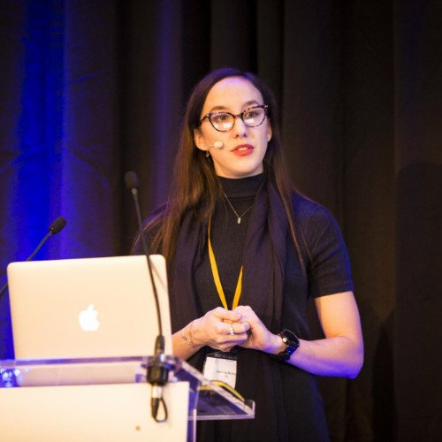

The People
A small, expert group united by a belief in rigorous, honest, impactful data work.
Statistician, data engineer, and recovery specialist with over 15 years of experience across healthcare, finance, research, and technology. Ranked #17 all time on Cross Validated out of 400,000+ users, and #1 globally in mixed models, multilevel analysis, and clinical trial methodology.
Robert founded The Data Guru Ltd to bring statistical rigour and practical data expertise to organisations and individuals who need it most — from clinical researchers to small businesses to anyone facing a data emergency.

Independent epidemiologist and management consultant with 12 years of healthcare experience. Chrissy specialises in combining advanced analytics with stakeholder engagement to guide decision-making and produce measurable impact.
Her client portfolio spans public and private sector, non-profit, and intergovernmental organisations — including the NHS, the United Nations, the World Health Organization, and the pharmaceutical industry.
First-year Business Management student at Durham University, contributing to research at The Data Guru Ltd exploring how blockchain and artificial intelligence can be applied in business contexts.
Sasha brings a fresh perspective and an eye for emerging technology trends, with a particular interest in the intersection of data, business strategy, and decentralised systems.
Growing Our Network
The Data Guru Ltd works with a carefully selected group of independent collaborators — bringing in specialist expertise for the right projects. If you are a statistician, data scientist, or domain expert interested in working with us, we'd love to hear from you.
Get in TouchTell us about your project and we'll find the right expertise for it.